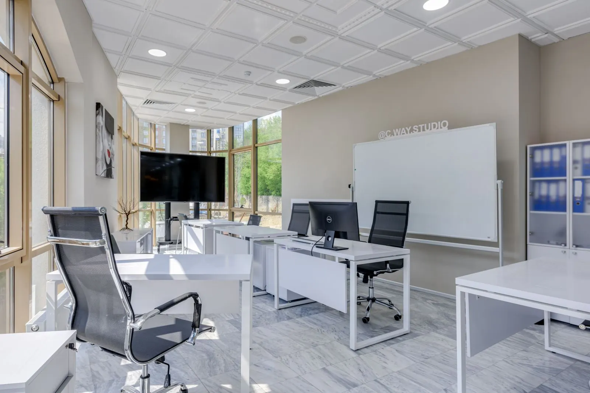
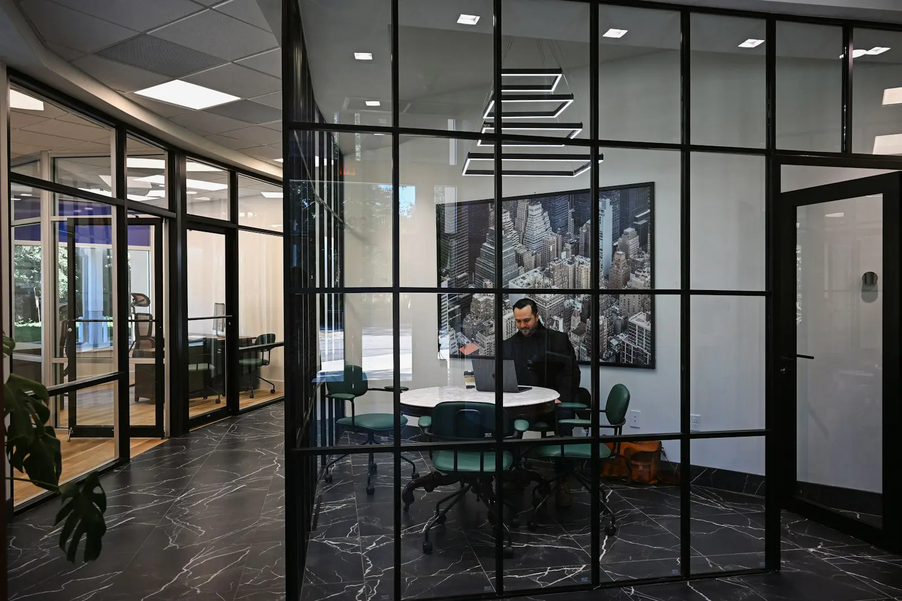
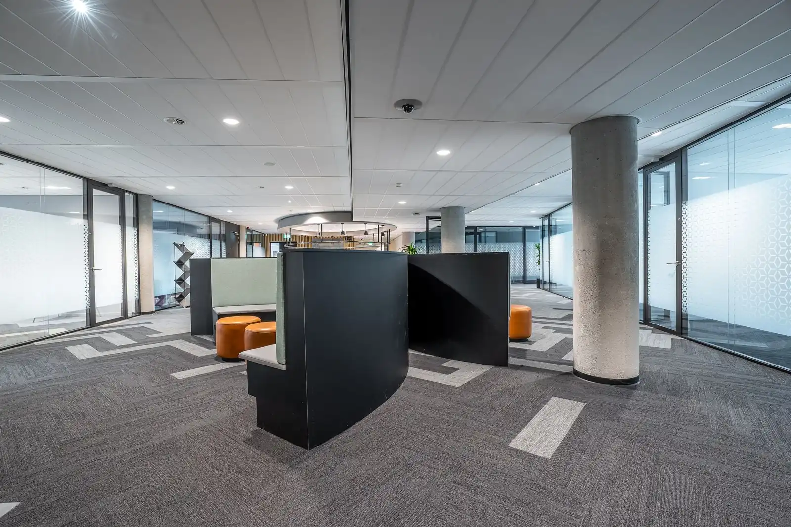

Insights
Análises informativas sobre mudanças legais e temas recorrentes nas empresas, escritas pela equipe do escritório.
Artigos
8 artigos
Reforma tributária: o que revisar nos contratos de fornecimento
A troca de PIS, Cofins, ICMS e ISS pela CBS e pelo IBS muda a forma de calcular preço e crédito. Contratos de longo prazo merecem uma leitura antes de 2027.

NR-1: riscos psicossociais no gerenciamento de riscos da empresa
A nova redação da NR-1 pede que fatores como sobrecarga, metas e assédio apareçam no inventário de riscos. Entenda o que muda na rotina do RH e da segurança do trabalho.

Incidente de segurança com dados pessoais: o que a LGPD pede da empresa
Quando um incidente pode causar risco ou dano relevante aos titulares, a comunicação à ANPD e aos afetados tem prazo e conteúdo definidos em regulamento.
Acordo de sócios: cláusulas que organizam a saída e a sucessão
O contrato social diz quem são os sócios. O acordo de sócios diz o que acontece quando um deles quer sair, falece ou deixa de atuar na empresa.
Locação comercial: requisitos e janela da ação renovatória
A Lei do Inquilinato protege o ponto comercial, mas a renovação compulsória depende de requisitos e de um período certo para propor a ação.
Programa de integridade: o que torna um canal de denúncias efetivo
A regulamentação da Lei Anticorrupção lista parâmetros para avaliar programas de integridade. O canal de denúncias é um deles e precisa funcionar na prática.
Cédula de Produto Rural: pontos de atenção na emissão e no registro
A CPR é um dos principais instrumentos de financiamento do agronegócio. Mudanças recentes na lei ampliaram seu uso e reforçaram a exigência de registro.

Entrada de investidor: como preparar a empresa para a auditoria jurídica
Antes de assinar, o investidor faz uma auditoria jurídica. Organizar documentos e corrigir pendências antes encurta a negociação e evita surpresas.
Nenhum artigo encontrado com esses termos.
Sobre o conteúdo
Caráter informativo
Os artigos explicam normas e temas de forma geral, com as referências legais indicadas em cada texto. Eles não constituem parecer nem recomendação para um caso específico.